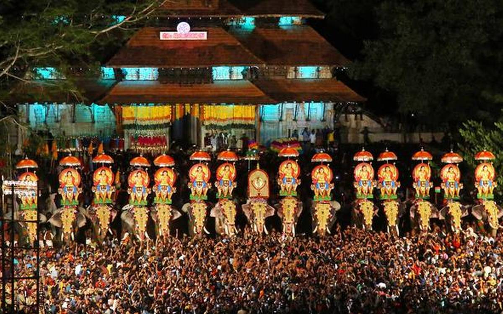

Places To Visit
Athirappilly Waterfalls
On the outskirts of the city at a distance of some 60 km, the Athirappilly waterfalls mark one of the best places to visit in Thrissur. Standing 80 ft tall and about 330 ft wide, these falls are the largest in the state of Kerala.
Kerala Kalamandalam

A University of Art and Culture, Kerala Kalamandir is a Government of India recognized institution providing learning in the many performing arts native to India.Their main focus being on the arts that have been developed in Southern India.
Vadakkunnathan Temple

An ancient temple of Kerala, the Vadakkunnathan Temple is also the oldest temple of the state dedicated to Lord Shiva. Following the architectural style of Kerala, the temple has monumental towers surrounding it.
Popular Things To Do
Attend Thrissur Pooram
The Thrissur Pooram is an annual temple festival held in Kerala, India. It is held at the Vadakkunnathan Temple in Thrissur every year on the Pooram day
Enjoy the historic Beauty of Shakthan Thampuran Palace
Shakthan is one of the oldest and finest palace built by the king shakathan tampuran.It's now a musuem.
Picnic to Vilangan Kunnu

The oxygen jar of the city of Thrissur, Vilangan Kunnu is a hillock located near the city.Here,one can get a fine view of the Thrissur city and Thrissur Kole Wetlands, making the place one of the most favourite picnic spots.